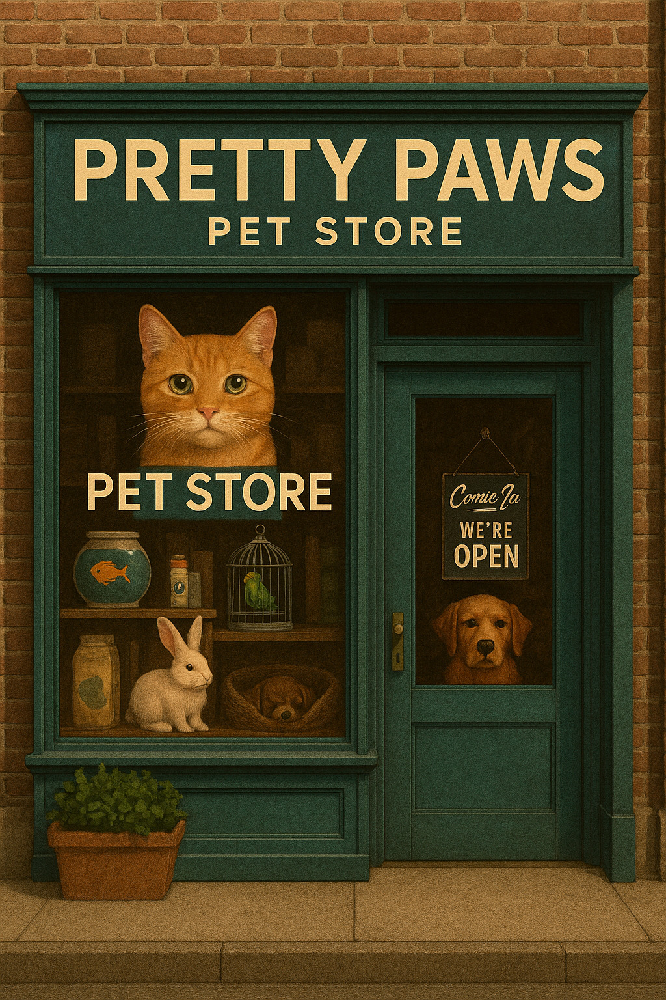

Welcome to Pretty Paws Pet Shop
Pretty Paws Pet Shop is your friendly neighbourhood destination for happy, healthy pets of every kind. Although our name reflects our fondness for cats, our shelves are filled with quality food, toys, accessories and care essentials for dogs, small animals, birds and more. Whether you’re shopping for a playful kitten, a loyal pup or a tiny furry companion, we’re here to help you find everything they need to feel loved, comfortable and well cared for.
Our Storefront

This is our Pretty Paws storefront an inviting, teal‑trimmed pet paradise designed to catch your eye and draw you inside the moment you walk by. Our display window gives you a taste of what’s waiting for you: adorable animals ready for a loving home, from a curious little rabbit to a calm pup resting inside, along with a bright bird perched in its cage and a lively fishbowl that brings the whole scene to life. With “Pretty Paws” proudly displayed above the door and our welcoming “Come In, We’re Open” sign, we’ve created a space that makes it easy to step inside, explore our selection of toys, treats, accessories, and meet the wonderful pets who could become your next best friend. Everything about our storefront is designed to make you want to discover more because at Pretty Paws, your perfect companion is just a visit away.